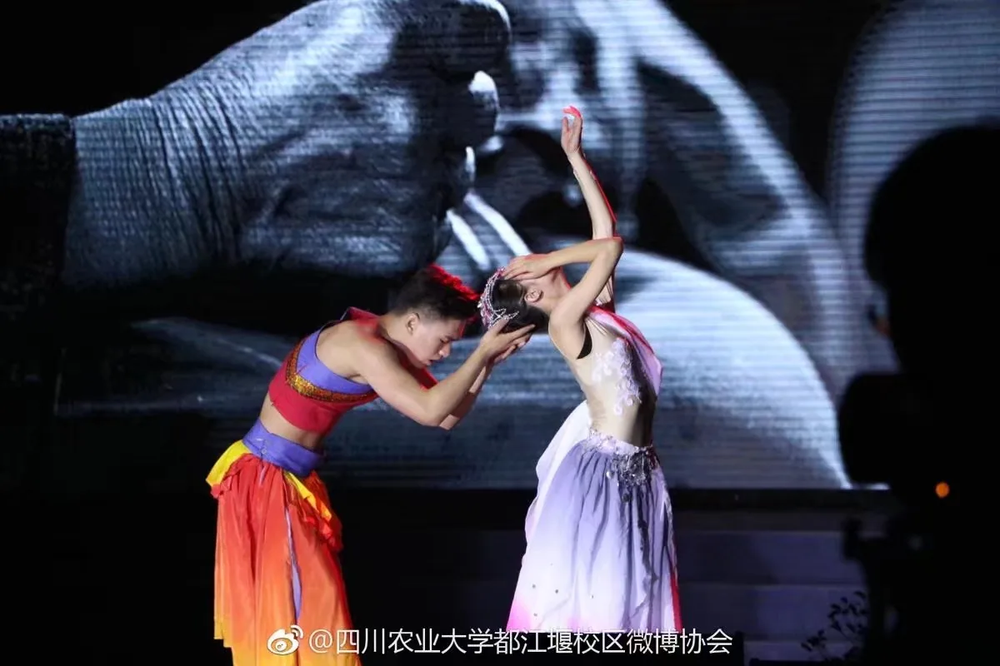
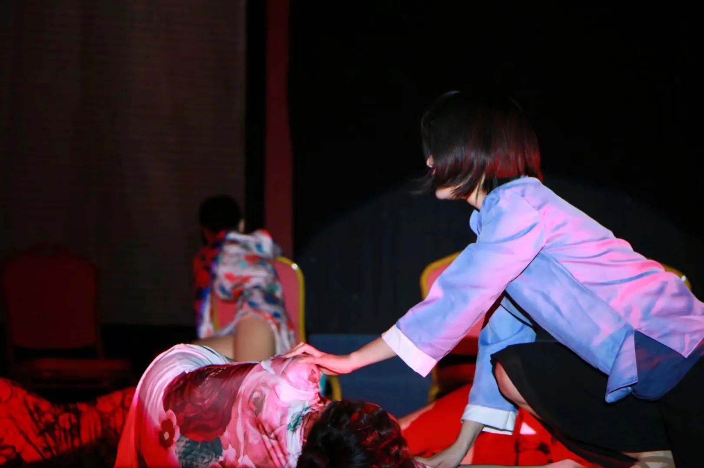
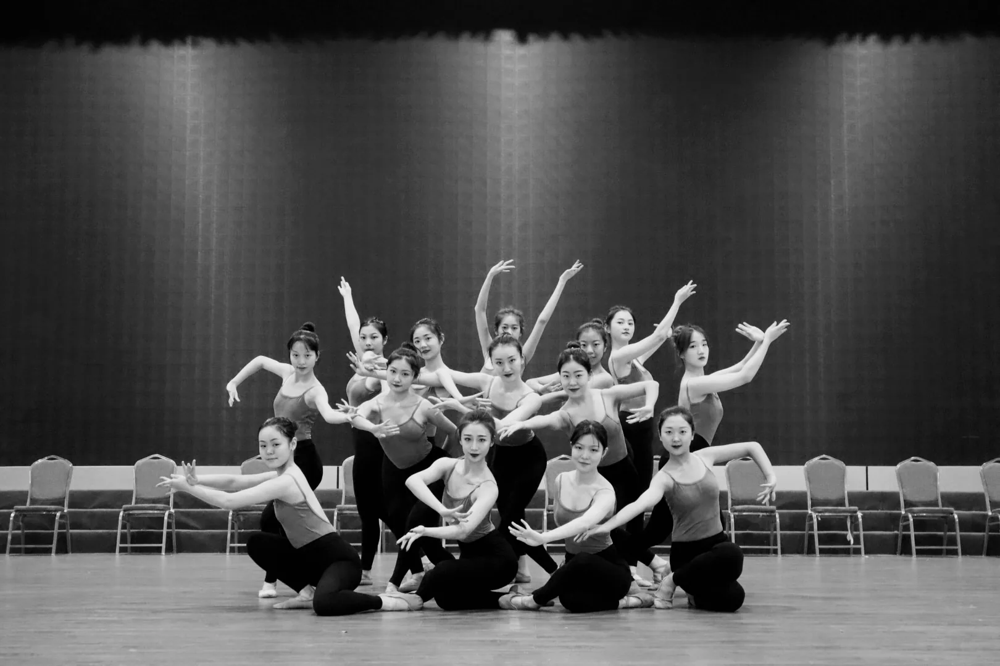
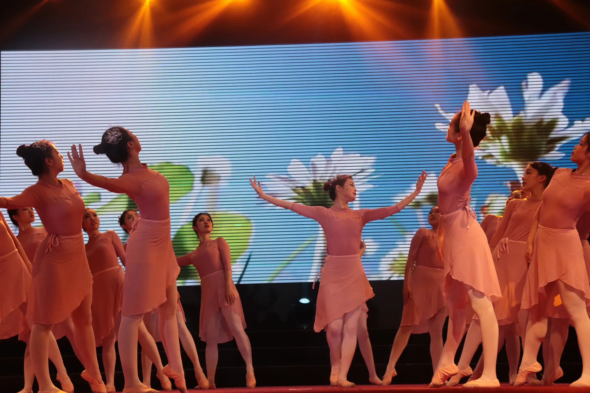

01
坚韧
曾任舞蹈团团长 · 舞者
古典舞
舞蹈是我最早理解“坚韧”的地方。高三准备艺术特长生考试时，我每天完成学业后继续练舞至凌晨，在汗水、泪水与浑身酸痛中回到课堂，周末再奔赴不同高校参加考试。后来担任舞蹈团团长，我带领校区在三校区舞蹈比赛中实现首次突破。这种在艰难与不确定中仍然坚持向前的力量，也一直支撑着我的科研与工作。
“每一个不曾起舞的日子，都是对生命的辜负。”
练至凌晨高三完成学业后的日常训练
舞团团长带领校区在三校区比赛中实现首次突破




